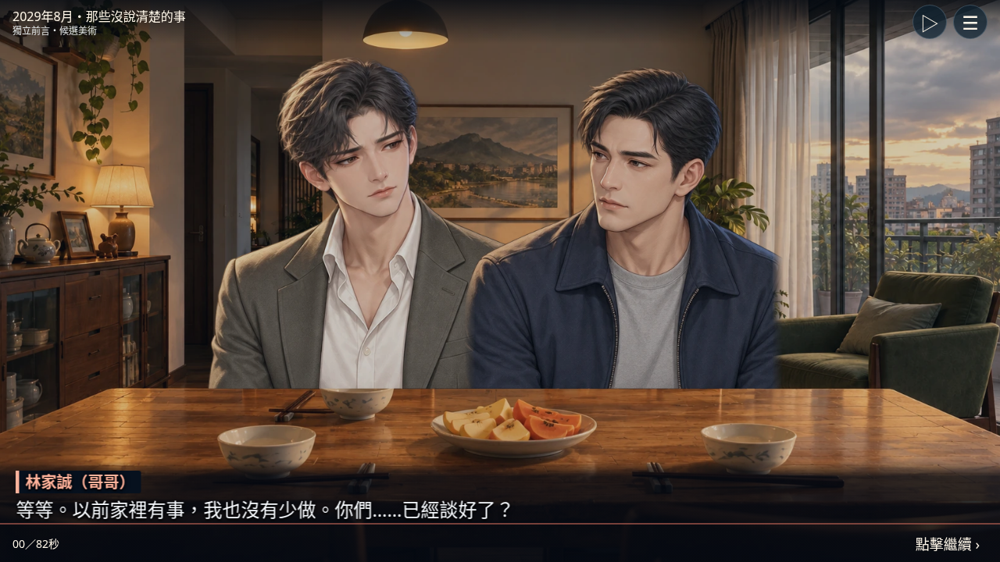
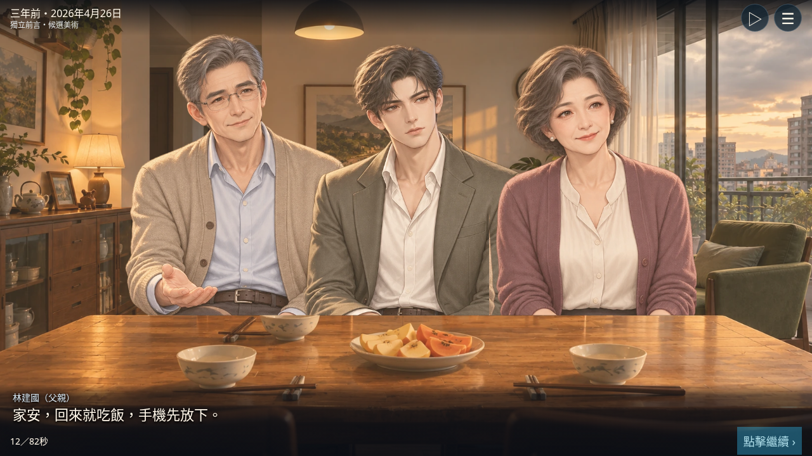
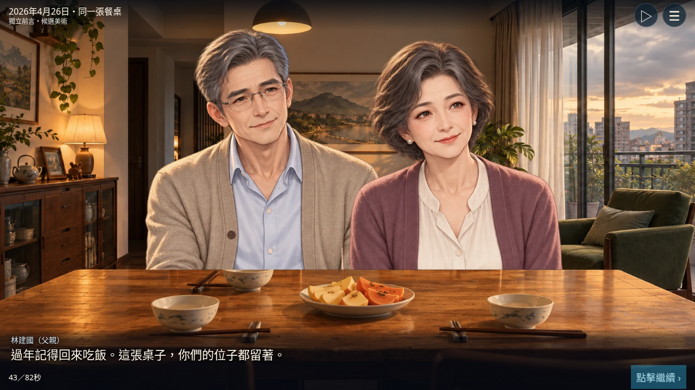

《兩間房子的承諾》82秒獨立前言・候選美術審閱
這是獨立候選預覽，尚未整合正式第一卷。部署沿用正式遊戲SHA256保護；公開狀態另見publication.json，實體裝置仍待驗收。
故事預設手動閱讀，可選自動播放。影片為實際瀏覽器錄製，82秒故事＋尾端停留；無聲音。有限鏡頭與候選坐姿，不冒充正式人物動畫。
冷開場用哥哥多年委屈留下懸念，不判誰對誰錯；回到2026年的家庭日常，父親希望過年團聚。父親出租屋、母親自住房，均不算入玩家財產。



844×300、150%字級。字幕單行收合，全文可暫停展開；沒有縮小主要台詞字級。這是模擬工具列佔用後的可用高度，不是實體Safari截圖。
父母、配偶三人與餐桌、醫院、出租屋背景均為新候選稿；三名手足沿用既有概念素材。正式美術簽核為0。父母與配偶尚無完整表情、眨眼、動作或嘴型。端菜、拿手機、遞單與聲音尚未製作。
實體iPhone、Android、Safari與平板實機尚未驗收；單檔HTML直接file://開啟受環境瀏覽器政策阻擋，僅驗證HTTP單檔載入。
2029年8月冷開場時父親已於7月12日離世、母親仍健在；回到2026年4月兩人均健在。5月18日父親出院照顧為原本第一個選擇。父母2029、2031兩次死亡事件不合併。
沒有預設有效遺囑、母親同意分產、保險理賠、繼承比例或稅額。A／B／C讀取既有第一個照顧選擇，試演反應不寫正式進度；未新增第七次選擇、未顯示八種結局，未修改State v4。
等待玩家確認前言節奏、候選人物與閱讀體驗後，才評估整合。